Jev 1.14 image smoke test
Six public source photos + one crop; labels frozen before requests. Green = approximate reference box. Pink = Jev box, including absent targets shown for debugging. A box is not evidence of presence. No patient data.
{
"requests": 14,
"first_run_binary": {
"correct": 42,
"total": 42,
"tp": 7,
"fp": 0,
"fn": 0
},
"first_run_choice": {
"correct": 11,
"total": 13
},
"first_run_boxes_iou_ge_05": 8,
"first_run_box_count": 8,
"median_latency_seconds": 1.6112972229998377,
"min_latency_seconds": 0.7019311620001645,
"max_latency_seconds": 2.1205401390002407,
"input_tokens": 46176,
"target_presence_correct": 22,
"target_presence_total": 22,
"estimated_usd_at_published_rate": 0.001939392
}bathroom · run 1 · 1.79s
The red alarm cord is not an electrical floor cable. No clinical safety rating is assigned.
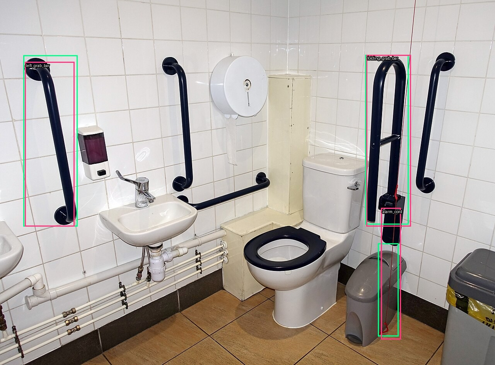
| Question | Label | Prediction | Value | Result |
|---|
| cables | False | False | 0.170 | OK |
| rug | False | False | 0.030 | OK |
| stairs | False | False | 0.030 | OK |
| grab_bar | True | True | 0.990 | OK |
| stair_handrail | False | False | 0.020 | OK |
| clutter | False | False | 0.020 | OK |
| floor_view | visible | visible | 1.000 | OK |
| rug_attachment | not_visible | not_visible | 1.000 | OK |
| BOX left_grab_bar | present | presence=0.950 | IoU=0.8741258741258741 | box confidence=0.81 |
| BOX folding_grab_bar | present | presence=0.860 | IoU=0.912371610992875 | box confidence=0.6 |
| BOX alarm_cord | present | presence=0.820 | IoU=0.5582768148706352 | box confidence=0.48 |
bathroom · run 2 · 1.68s
The red alarm cord is not an electrical floor cable. No clinical safety rating is assigned.
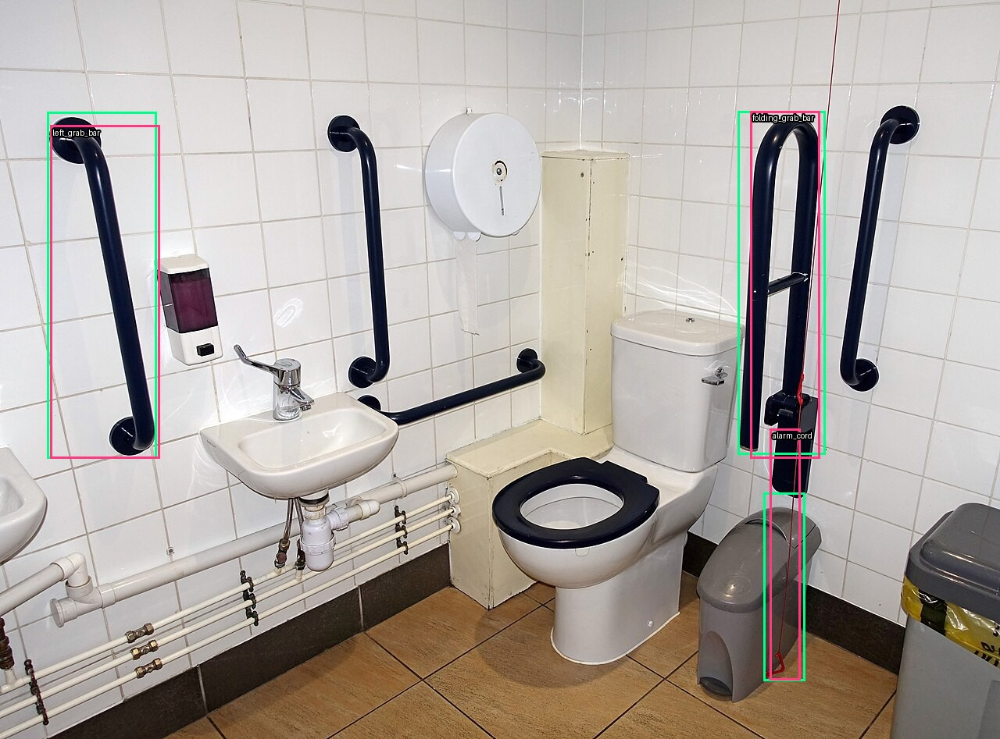
| Question | Label | Prediction | Value | Result |
|---|
| cables | False | False | 0.170 | OK |
| rug | False | False | 0.030 | OK |
| stairs | False | False | 0.020 | OK |
| grab_bar | True | True | 1.000 | OK |
| stair_handrail | False | False | 0.020 | OK |
| clutter | False | False | 0.020 | OK |
| floor_view | visible | visible | 1.000 | OK |
| rug_attachment | not_visible | not_visible | 1.000 | OK |
| BOX left_grab_bar | present | presence=0.950 | IoU=0.9114139693356047 | box confidence=0.79 |
| BOX folding_grab_bar | present | presence=0.820 | IoU=0.7963126409728348 | box confidence=0.6 |
| BOX alarm_cord | present | presence=0.850 | IoU=0.5827702702702701 | box confidence=0.5 |
cables · run 1 · 1.54s
Wires are visible; the photo alone does not establish whether this surface is a walkway. Floor-view judgement is excluded as ambiguous.
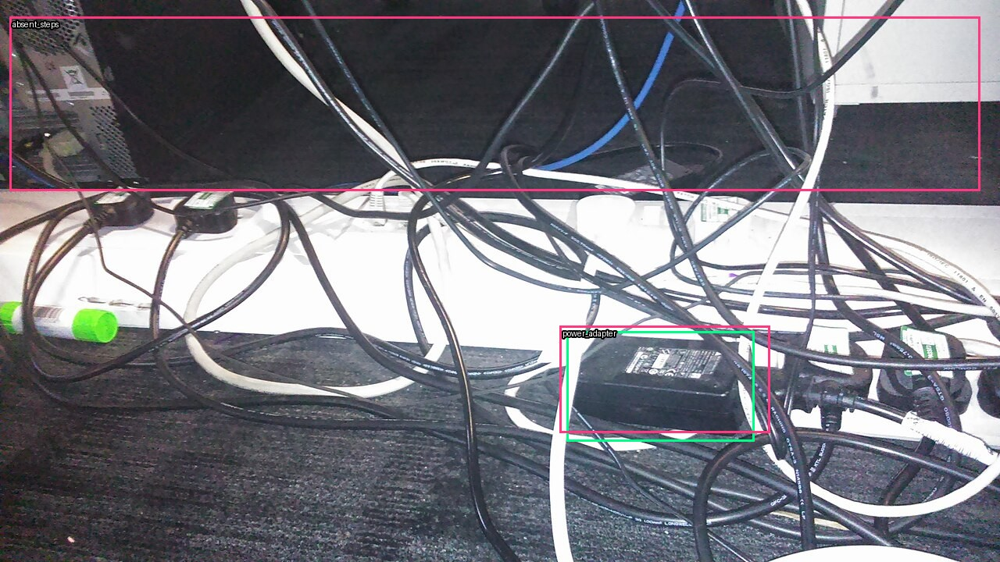
| Question | Label | Prediction | Value | Result |
|---|
| cables | True | True | 1.000 | OK |
| rug | False | False | 0.300 | OK |
| stairs | False | False | 0.020 | OK |
| grab_bar | False | False | 0.020 | OK |
| stair_handrail | False | False | 0.010 | OK |
| clutter | False | False | 0.040 | OK |
| floor_view | None | visible | 0.250 | unscored |
| rug_attachment | not_visible | unknown | 0.730 | MISS |
| BOX power_adapter | present | presence=0.920 | IoU=0.7881981032665966 | box confidence=0.84 |
| BOX absent_steps | absent | presence=0.020 | IoU=n/a | box confidence=0.05 |
cables · run 2 · 1.42s
Wires are visible; the photo alone does not establish whether this surface is a walkway. Floor-view judgement is excluded as ambiguous.
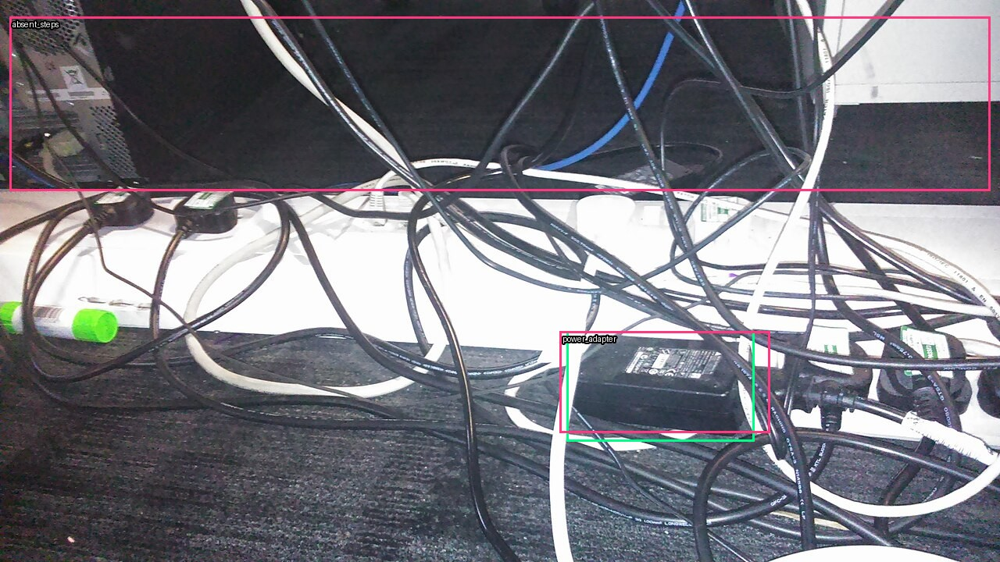
| Question | Label | Prediction | Value | Result |
|---|
| cables | True | True | 1.000 | OK |
| rug | False | False | 0.290 | OK |
| stairs | False | False | 0.020 | OK |
| grab_bar | False | False | 0.020 | OK |
| stair_handrail | False | False | 0.010 | OK |
| clutter | False | False | 0.040 | OK |
| floor_view | None | obscured | 0.140 | unscored |
| rug_attachment | not_visible | unknown | 0.720 | MISS |
| BOX power_adapter | present | presence=0.910 | IoU=0.8289619504987072 | box confidence=0.83 |
| BOX absent_steps | absent | presence=0.020 | IoU=n/a | box confidence=0.05 |
clutter · run 1 · 2.12s
Piles obscure the floor. Labels concern visible content only; hidden rugs or cables cannot be ruled out.
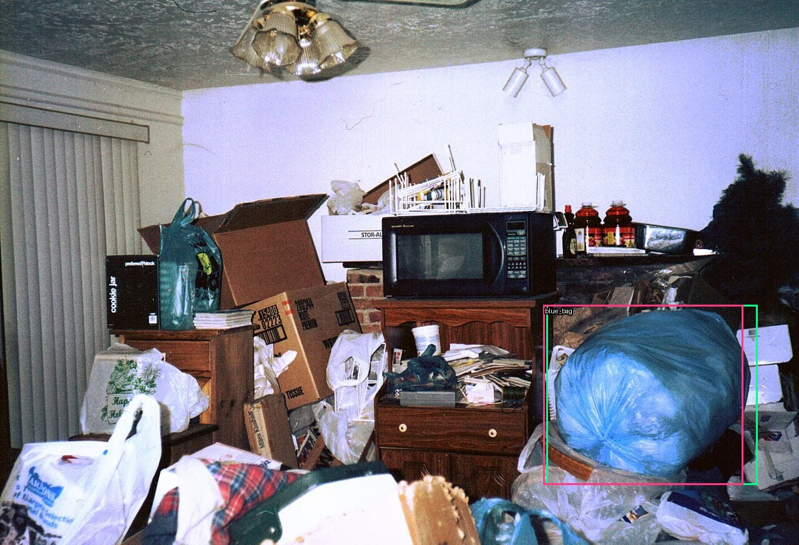
| Question | Label | Prediction | Value | Result |
|---|
| cables | False | False | 0.250 | OK |
| rug | False | False | 0.050 | OK |
| stairs | False | False | 0.040 | OK |
| grab_bar | False | False | 0.030 | OK |
| stair_handrail | False | False | 0.030 | OK |
| clutter | True | True | 0.990 | OK |
| floor_view | obscured | obscured | 0.890 | OK |
| rug_attachment | not_visible | not_visible | 0.930 | OK |
| BOX blue_bag | present | presence=0.970 | IoU=0.9179104477611945 | box confidence=0.8 |
clutter · run 2 · 1.88s
Piles obscure the floor. Labels concern visible content only; hidden rugs or cables cannot be ruled out.
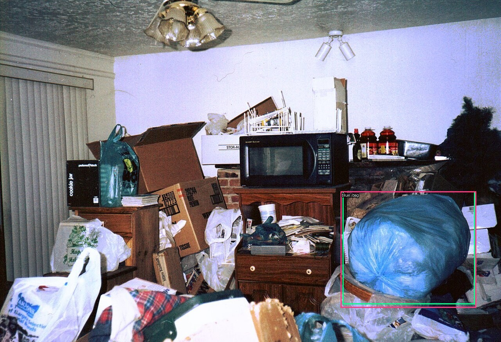
| Question | Label | Prediction | Value | Result |
|---|
| cables | False | False | 0.260 | OK |
| rug | False | False | 0.060 | OK |
| stairs | False | False | 0.040 | OK |
| grab_bar | False | False | 0.030 | OK |
| stair_handrail | False | False | 0.020 | OK |
| clutter | True | True | 0.990 | OK |
| floor_view | obscured | obscured | 0.910 | OK |
| rug_attachment | not_visible | not_visible | 0.920 | OK |
| BOX blue_bag | present | presence=0.970 | IoU=0.9490196078431373 | box confidence=0.69 |
family_room · run 1 · 1.94s
The rug is partially hidden by the sofa. Its visible portion is labelled; its attachment is unknown.
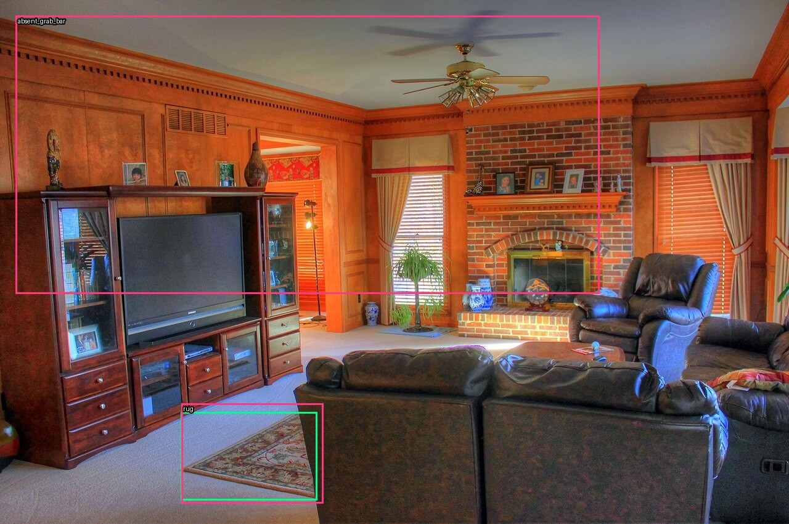
| Question | Label | Prediction | Value | Result |
|---|
| cables | False | False | 0.280 | OK |
| rug | True | True | 0.980 | OK |
| stairs | False | False | 0.030 | OK |
| grab_bar | False | False | 0.020 | OK |
| stair_handrail | False | False | 0.020 | OK |
| clutter | False | False | 0.020 | OK |
| floor_view | visible | visible | 1.000 | OK |
| rug_attachment | unknown | unknown | 0.920 | OK |
| BOX rug | present | presence=0.960 | IoU=0.8407821229050281 | box confidence=0.89 |
| BOX absent_grab_bar | absent | presence=0.020 | IoU=n/a | box confidence=0.02 |
family_room · run 2 · 1.71s
The rug is partially hidden by the sofa. Its visible portion is labelled; its attachment is unknown.
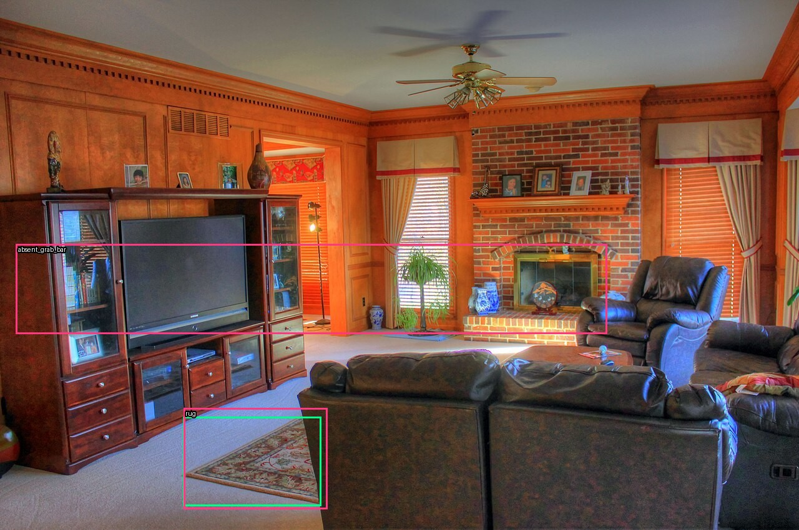
| Question | Label | Prediction | Value | Result |
|---|
| cables | False | False | 0.280 | OK |
| rug | True | True | 0.980 | OK |
| stairs | False | False | 0.040 | OK |
| grab_bar | False | False | 0.020 | OK |
| stair_handrail | False | False | 0.020 | OK |
| clutter | False | False | 0.030 | OK |
| floor_view | visible | visible | 1.000 | OK |
| rug_attachment | unknown | unknown | 0.910 | OK |
| BOX rug | present | presence=0.970 | IoU=0.8407821229050281 | box confidence=0.91 |
| BOX absent_grab_bar | absent | presence=0.020 | IoU=n/a | box confidence=0.03 |
staged_room · run 1 · 1.20s
The small rug is cut by the frame. Attachment cannot be established from its top surface.

| Question | Label | Prediction | Value | Result |
|---|
| cables | False | False | 0.150 | OK |
| rug | True | True | 0.960 | OK |
| stairs | False | False | 0.080 | OK |
| grab_bar | False | False | 0.040 | OK |
| stair_handrail | False | False | 0.020 | OK |
| clutter | False | False | 0.020 | OK |
| floor_view | visible | visible | 1.000 | OK |
| rug_attachment | unknown | unknown | 0.960 | OK |
| BOX rug | present | presence=0.980 | IoU=0.9058517555266579 | box confidence=0.94 |
staged_room · run 2 · 0.93s
The small rug is cut by the frame. Attachment cannot be established from its top surface.
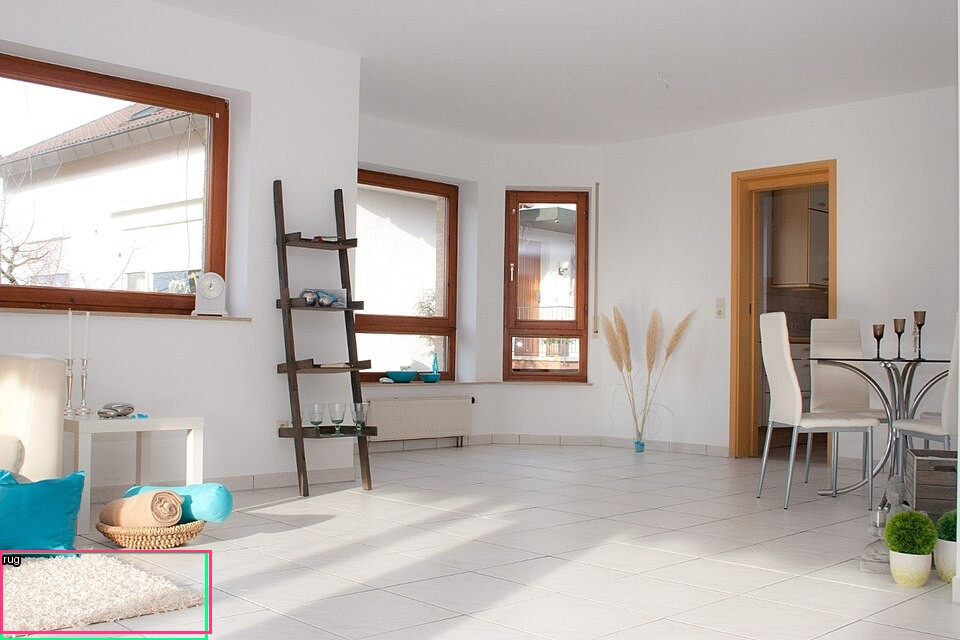
| Question | Label | Prediction | Value | Result |
|---|
| cables | False | False | 0.140 | OK |
| rug | True | True | 0.960 | OK |
| stairs | False | False | 0.070 | OK |
| grab_bar | False | False | 0.050 | OK |
| stair_handrail | False | False | 0.020 | OK |
| clutter | False | False | 0.030 | OK |
| floor_view | visible | visible | 1.000 | OK |
| rug_attachment | unknown | unknown | 0.950 | OK |
| BOX rug | present | presence=0.990 | IoU=0.9058517555266579 | box confidence=0.94 |
stairs · run 1 · 2.06s
A right-side handrail is visible; no inference about compliant dimensions or grip strength.
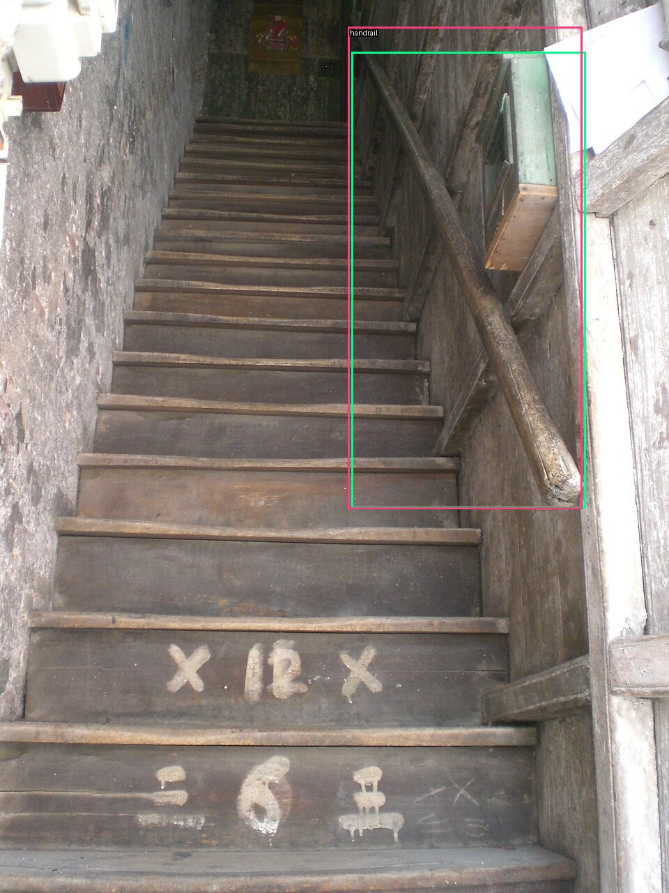
| Question | Label | Prediction | Value | Result |
|---|
| cables | False | False | 0.180 | OK |
| rug | False | False | 0.350 | OK |
| stairs | True | True | 0.990 | OK |
| grab_bar | False | False | 0.020 | OK |
| stair_handrail | True | True | 0.960 | OK |
| clutter | False | False | 0.020 | OK |
| floor_view | visible | visible | 1.000 | OK |
| rug_attachment | not_visible | unknown | 0.650 | MISS |
| BOX handrail | present | presence=0.950 | IoU=0.9152270573656971 | box confidence=0.69 |
stairs · run 2 · 1.06s
A right-side handrail is visible; no inference about compliant dimensions or grip strength.

| Question | Label | Prediction | Value | Result |
|---|
| cables | False | False | 0.200 | OK |
| rug | False | False | 0.370 | OK |
| stairs | True | True | 0.980 | OK |
| grab_bar | False | False | 0.020 | OK |
| stair_handrail | True | True | 0.970 | OK |
| clutter | False | False | 0.020 | OK |
| floor_view | visible | visible | 1.000 | OK |
| rug_attachment | not_visible | unknown | 0.690 | MISS |
| BOX handrail | present | presence=0.950 | IoU=0.9152270573656971 | box confidence=0.7 |
upper_room_crop · run 1 · 0.77s
Crop of staged_room, not an independent scene. No floor visible. Negative observations do not mean a safe room.
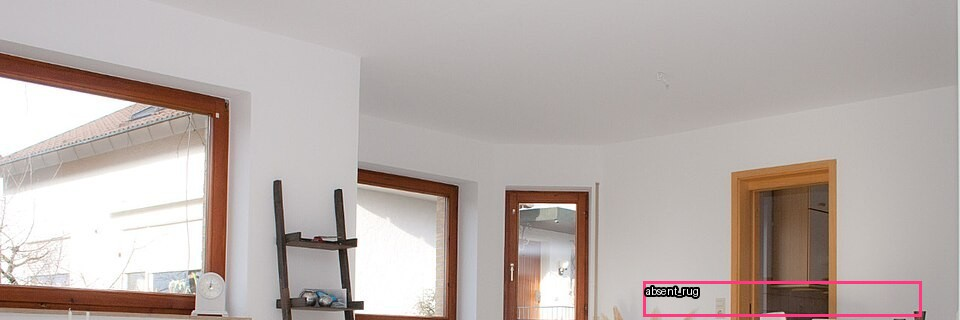
| Question | Label | Prediction | Value | Result |
|---|
| cables | False | False | 0.190 | OK |
| rug | False | False | 0.040 | OK |
| stairs | False | False | 0.060 | OK |
| grab_bar | False | False | 0.180 | OK |
| stair_handrail | False | False | 0.100 | OK |
| clutter | False | False | 0.010 | OK |
| floor_view | out_of_frame | out_of_frame | 0.980 | OK |
| rug_attachment | not_visible | not_visible | 0.990 | OK |
| BOX absent_rug | absent | presence=0.040 | IoU=n/a | box confidence=0.04 |
upper_room_crop · run 2 · 0.70s
Crop of staged_room, not an independent scene. No floor visible. Negative observations do not mean a safe room.
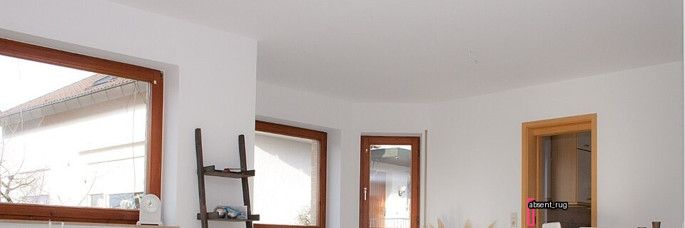
| Question | Label | Prediction | Value | Result |
|---|
| cables | False | False | 0.190 | OK |
| rug | False | False | 0.040 | OK |
| stairs | False | False | 0.060 | OK |
| grab_bar | False | False | 0.170 | OK |
| stair_handrail | False | False | 0.090 | OK |
| clutter | False | False | 0.010 | OK |
| floor_view | out_of_frame | out_of_frame | 0.980 | OK |
| rug_attachment | not_visible | not_visible | 0.990 | OK |
| BOX absent_rug | absent | presence=0.040 | IoU=n/a | box confidence=0.06 |
Image credits
- cables: File:247 Home Rescue plug extension cable wires.jpg — 247homerescue, CC0. EXIF orientation normalized, resized to max 1280 px, metadata stripped, JPEG quality 90. License. Annotated derivatives retain the source license.
- bathroom: File:Accessible toilet.jpg — Tiia Monto, CC BY-SA 3.0. EXIF orientation normalized, resized to max 1280 px, metadata stripped, JPEG quality 90. License. Annotated derivatives retain the source license.
- family_room: File:Gfp-family-room.jpg — Yinan Chen, Public Domain. EXIF orientation normalized, resized to max 1280 px, metadata stripped, JPEG quality 90. License. Annotated derivatives retain the source license.
- clutter: File:Hoarding living room.jpg — Shadwwulf at English Wikipedia, CC BY 3.0. EXIF orientation normalized, resized to max 1280 px, metadata stripped, JPEG quality 90. License. Annotated derivatives retain the source license.
- stairs: File:HK Wan Chai Stone Nullah Lane Blue House Wooden Stairs.JPG — Bluehse, CC BY-SA 3.0. EXIF orientation normalized, resized, metadata stripped, JPEG quality 90. License. Annotated derivatives retain the source license.
- staged_room: File:Home Staging Beispiel Nachher.jpg — Die Home Stagerin Senta Hoffmann - http://www.die-home-stagerin.de, CC BY-SA 3.0. EXIF orientation normalized, resized, metadata stripped, JPEG quality 90. License. Annotated derivatives retain the source license.
- upper_room_crop: File:Home Staging Beispiel Nachher.jpg — Die Home Stagerin Senta Hoffmann - http://www.die-home-stagerin.de, CC BY-SA 3.0. Derived from staged_room.jpg by cropping pixels (0, 0, 960, 320); JPEG quality 90. License. Annotated derivatives retain the source license.